Stage 2025
Partnaire Luxembourg — agence de Belval
Immersion dans le secteur du travail temporaire et du recrutement, au sein d’une agence implantée dans le sud du Luxembourg : mécanismes de mise en relation entre entreprises et candidats, exigences commerciales, organisationnelles et juridiques.
125entreprises prospectées
250+candidatures triées
20profils proposés aux clients
11fiches de poste conçues
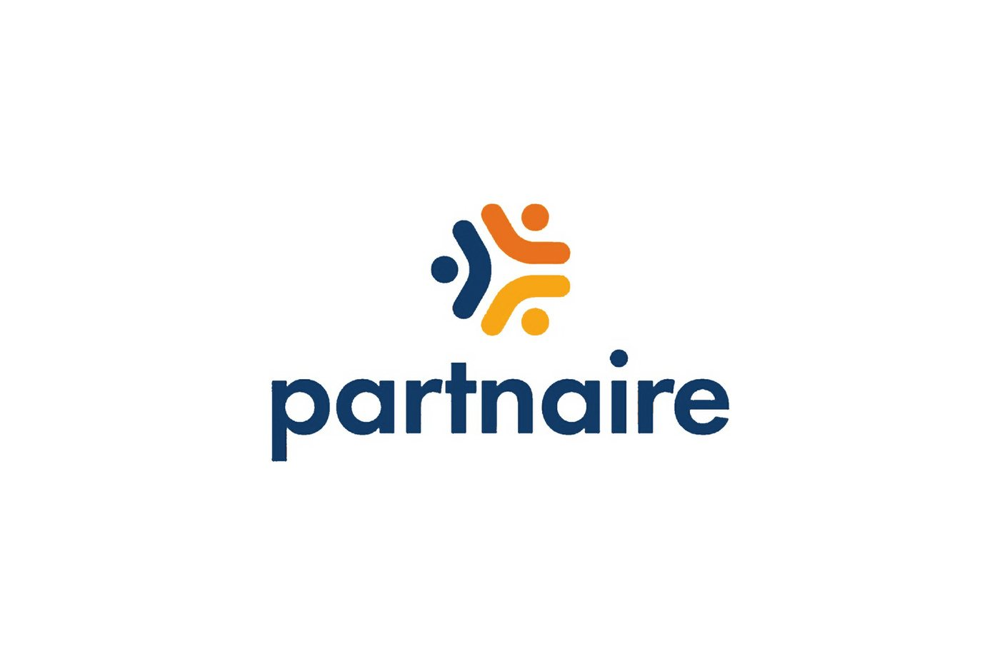
Le contexte du stage
- Stage de deuxième année de BUT GEA, du 14 avril au 6 juin 2025, dans le secteur du travail temporaire, au sein de l’agence Partnaire de Belval, au Luxembourg.
- Une agence à taille humaine, polyvalente, couvrant Belval, Esch-sur-Alzette, Differdange et les zones industrielles voisines, sous la responsabilité de Géraldine Lubin.
- Poste de stagiaire commercial : neuf missions confiées, de la prospection téléphonique à l’intégration des intérimaires, en passant par la diffusion des offres et le tri des candidatures.
La problématique du rapport
Comment une agence d’intérim comme Partnaire parvient-elle à concilier prospection commerciale, réactivité opérationnelle et qualité du recrutement dans un environnement concurrentiel, tout en assurant la satisfaction durable de ses clients et de ses intérimaires ?
Le Groupe Partnaire
- Entreprise française de services en ressources humaines fondée en 1952 à Orléans sous le nom de Secrétariat Mobile — l’une des toutes premières agences d’intérim créées en France.
- Virage vers le travail temporaire dans les années 1970, reprise en 1987 par Philippe Gobinet fils, puis repositionnement en 2022, pour ses 70 ans, autour de la qualité de service et de l’accompagnement humain.
- 267 agences en Europe, plus de 980 collaborateurs permanents, 602 M€ de chiffre d’affaires et 100 000 intérimaires placés par an.
- Quatre valeurs revendiquées — proximité, excellence opérationnelle, responsabilité et réactivité — et quatre certifications : ISO 9001, ISO 45001, CEFRI et MASE.
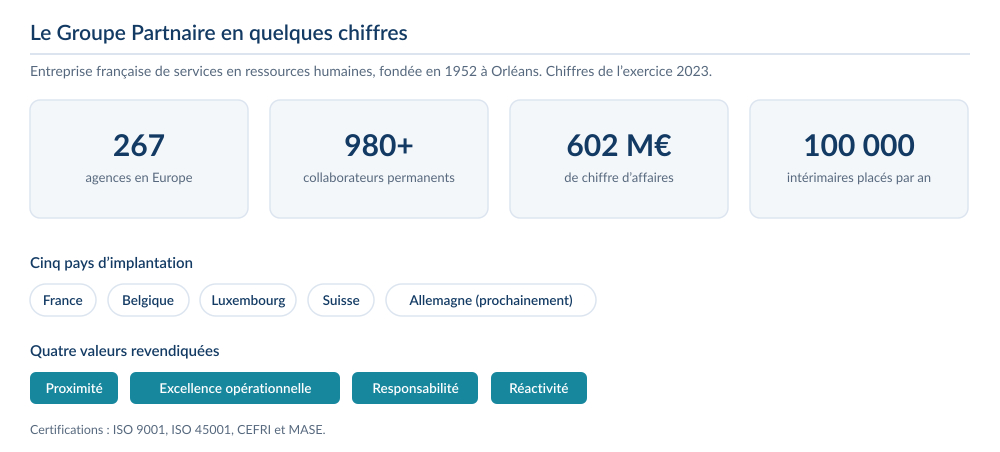
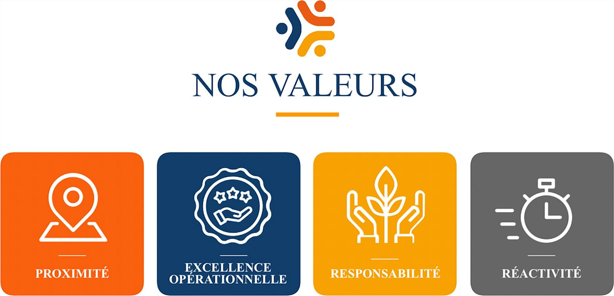
L’agence de Belval
- Le groupe est implanté au Luxembourg depuis 2008. L’agence occupe le 11 boulevard du Jazz, à quelques pas du Belval Plaza et de l’Université du Luxembourg.
- Une équipe réduite et polyvalente, dirigée par Géraldine Lubin, qui couvre Belval, Esch-sur-Alzette, Differdange et les zones industrielles voisines.
- Quatre domaines d’expertise : l’industrie (40 % des missions), le tertiaire (25 %), le transport et la logistique (25 %) et l’Horeca (10 %).
- Un environnement transfrontalier : candidats français, belges et luxembourgeois, obligations administratives propres au Grand-Duché, échanges courants en français comme en anglais.
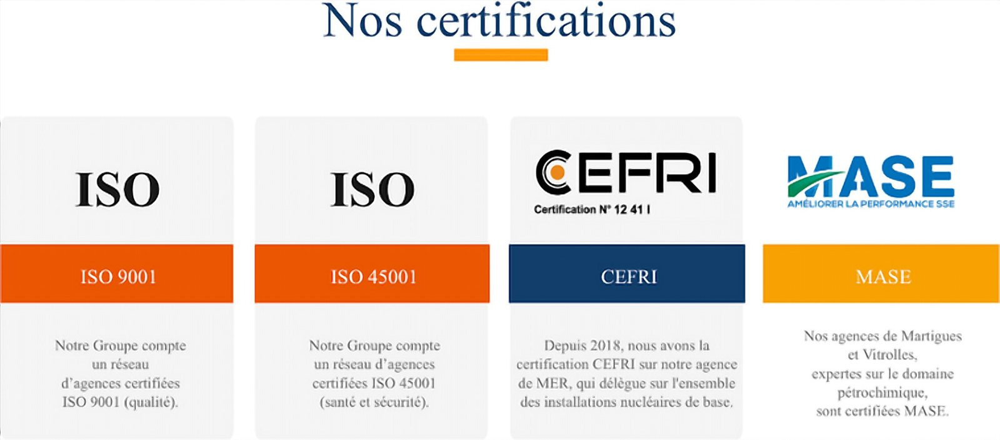
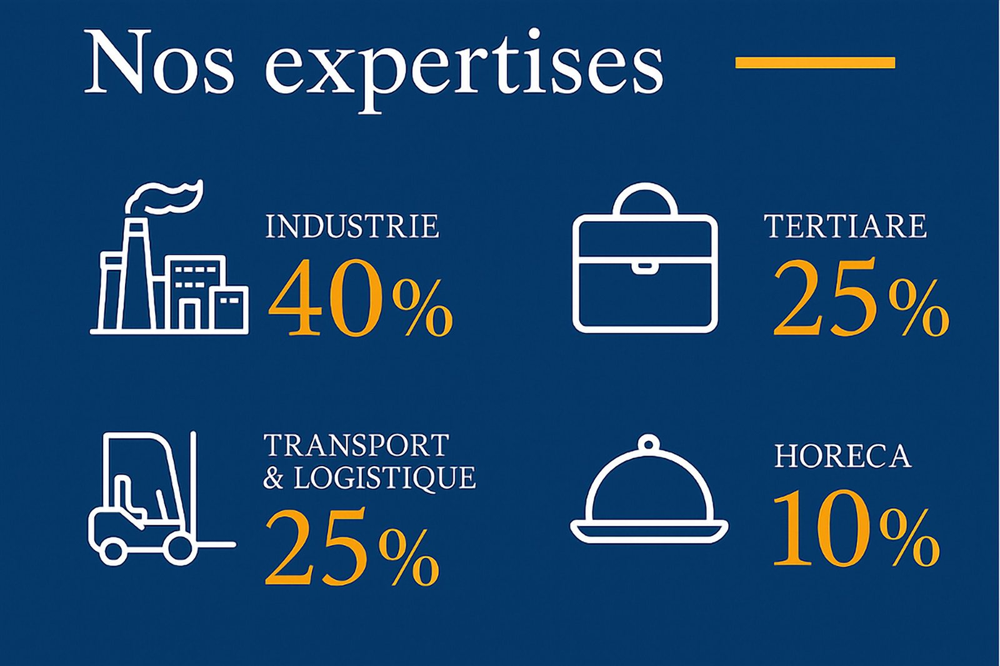
Prospection commerciale : 125 entreprises en quatre semaines
- Identification des prospects via Kompass, LinkedIn, les Pages Jaunes du Luxembourg, les anciennes bases de l’agence et des recherches sectorielles assistées par intelligence artificielle.
- Rédaction d’un script d’accroche téléphonique et de modèles d’e-mails en français et en anglais, adaptés au profil de l’interlocuteur.
- Tenue quotidienne d’un tableau de prospection partagé : entreprise, décideur, date et nature de l’échange, réponse obtenue, degré d’ouverture à une collaboration.
- Résultats : 125 entreprises contactées, 5 retours positifs, 3 demandes de CV et 1 rendez-vous commercial obtenu. J’ai également renoué avec une ancienne cliente, ce qui a débouché sur deux nouvelles demandes de postes.
- Difficulté principale : tomber sur des interlocuteurs non décisionnaires. Réponse apportée : meilleur ciblage en amont, relances structurées et ajustement du discours avec l’aide des collègues expérimentés.
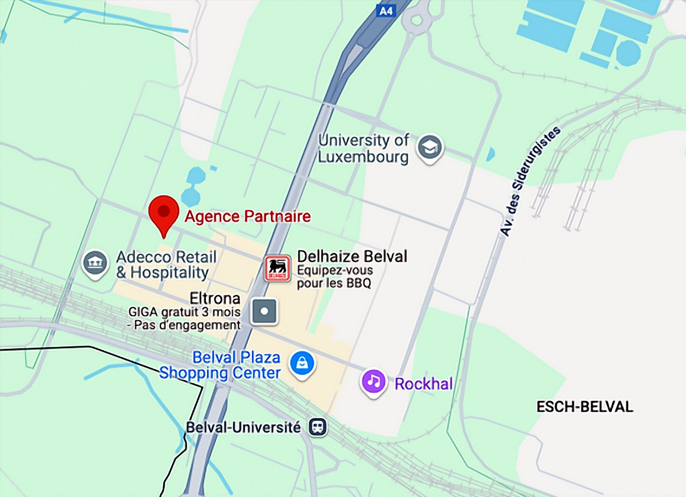
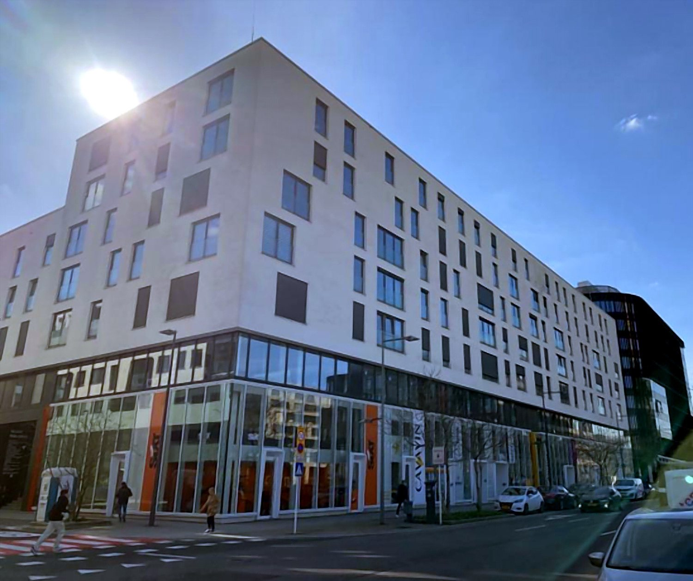
Le cycle de recrutement, de la commande à l’intégration
- Réception et synthèse de la commande client : poste, lieu, horaires, durée, rémunération et profil recherché.
- Présélection des candidatures sur Talentplug selon la disponibilité, la localisation, l’expérience et les compétences spécifiques.
- Appels de préqualification pour confirmer l’intérêt, vérifier l’expérience et recueillir les contraintes concrètes : mobilité, permis, attentes salariales.
- Accueil physique à l’agence, accompagnement des tests de sécurité obligatoires en industrie et en logistique, et conduite d’entretiens flash.
- Mise en poste avec les chargés de recrutement — contrat de mission, consignes, feuille de présence — puis appels de suivi quelques jours après la prise de poste.
- Résultats : plus de 250 candidatures triées, 20 profils proposés aux clients et plus de 10 intérimaires intégrés.
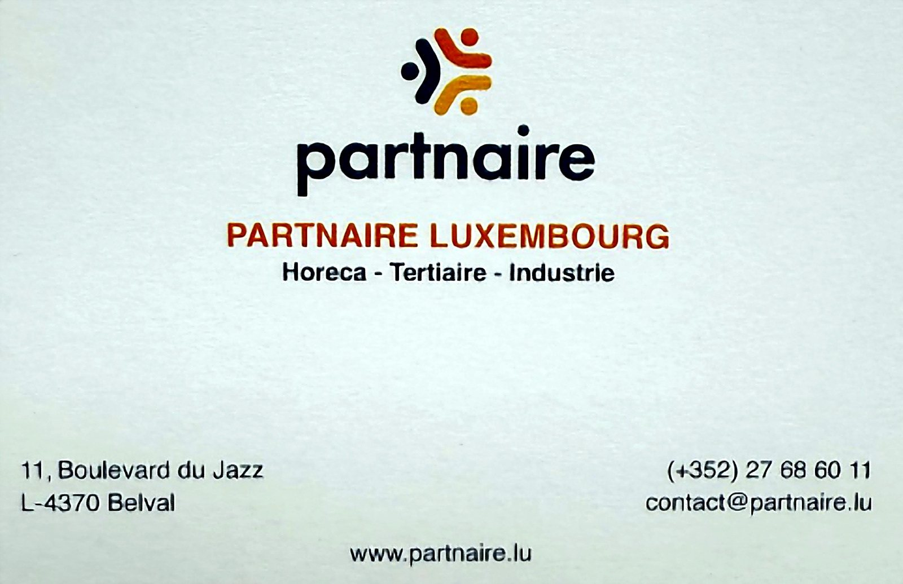
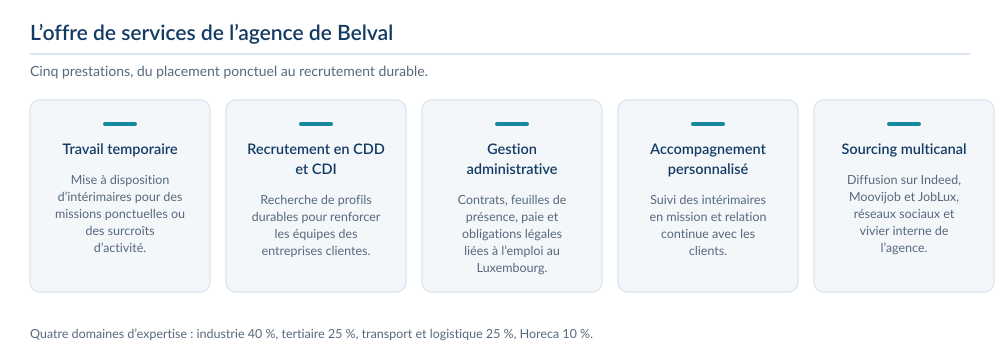
Recrutements urgents : dix postes pourvus en réactivité
- Jardinier : remplacement d’un absent, candidat identifié, qualifié et positionné en moins de 24 heures.
- Cuisinier et serveur : demandes express de la restauration, profils expérimentés validés par téléphone pour une prise de poste le lendemain, voire le soir même.
- Cariste CACES 3, nacelliste certifié et électricien habilité : vérification des certifications et des habilitations avant positionnement.
- Employé de station-service, gestionnaire de stock, nettoyeur industriel et opérateur de production : sourcing dans le vivier interne et sur les plateformes partenaires.
- Ce qu’il en ressort : dans l’intérim, la qualité du vivier et la rapidité de qualification comptent autant que la qualité du sourcing initial.
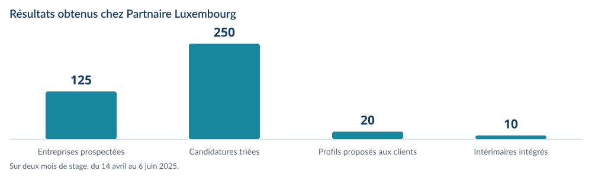
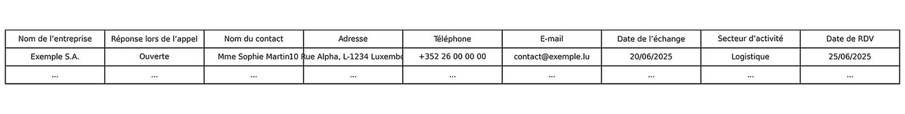
Marketing RH et communication externe
- Conception de onze fiches de poste illustrées, une par offre, diffusées sur Facebook, Instagram, LinkedIn et le site du groupe.
- Rythme de publication tenu à trois parutions par semaine minimum, avec optimisation des horaires et partage dans des groupes Facebook spécialisés.
- Diffusion multi-plateforme pilotée depuis Talentplug vers Indeed, Moovijob et JobLux, avec suivi des vues et des candidatures reçues.
- Mise en place de réponses automatiques aux messages entrants, pour informer les candidats sans délai.
- Effet observé : hausse des candidatures reçues par les réseaux sociaux et enrichissement du vivier, donc meilleure réactivité face aux besoins urgents des clients.

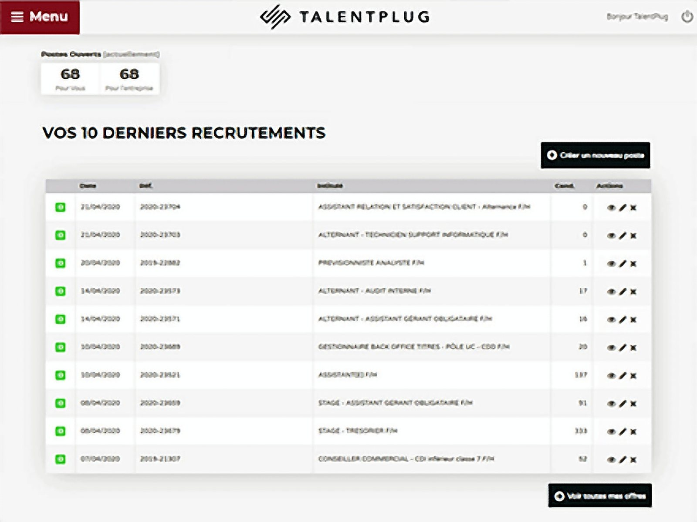
Ouverture de nouveaux secteurs et Jobdating ADEM
- Recherche de secteurs peu exploités par l’agence, via Kompass et des listes générées par intelligence artificielle, puis test de cohérence avec les besoins habituels des clients.
- Trois secteurs retenus : prestations de services industriels, gestion de stocks et logistique interne, stockage et logistique portuaire.
- Premiers retours : une entreprise de logistique portuaire favorable à un premier contact, une société de services industriels acceptant de recevoir des profils en test.
- Participation au RTL Jobdag de l’ADEM, le 16 mai 2025 au Belval Plaza : préparation des flyers et du stand, accueil des visiteurs, entretiens flash et collecte de CV.
- Résultats de la journée : plus de 50 candidats rencontrés personnellement, plus de 250 CV collectés par l’équipe et 10 profils retenus pour un suivi actif.
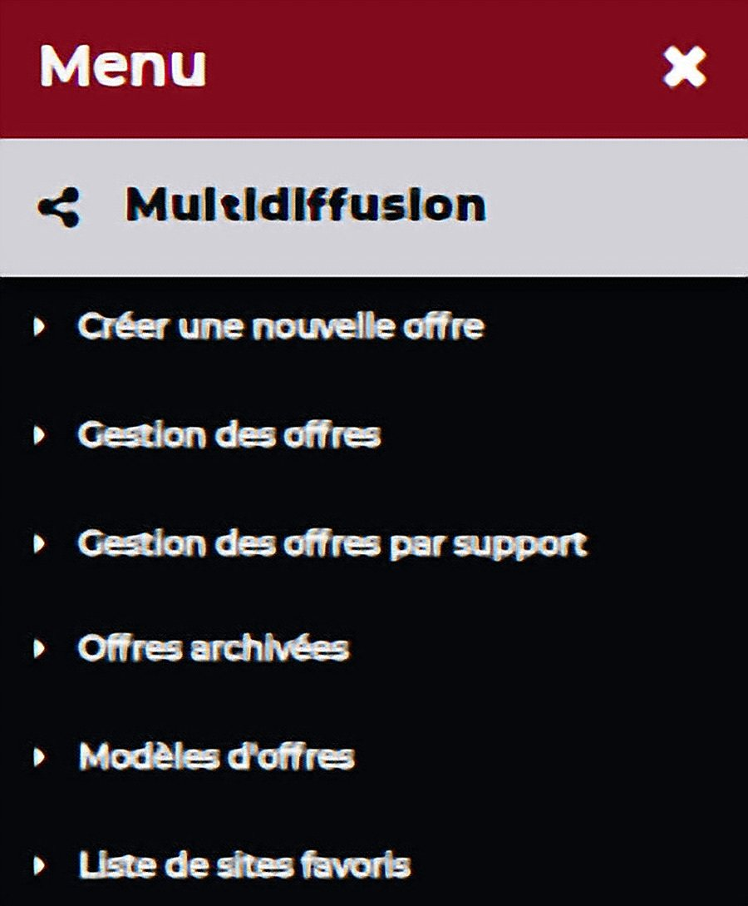
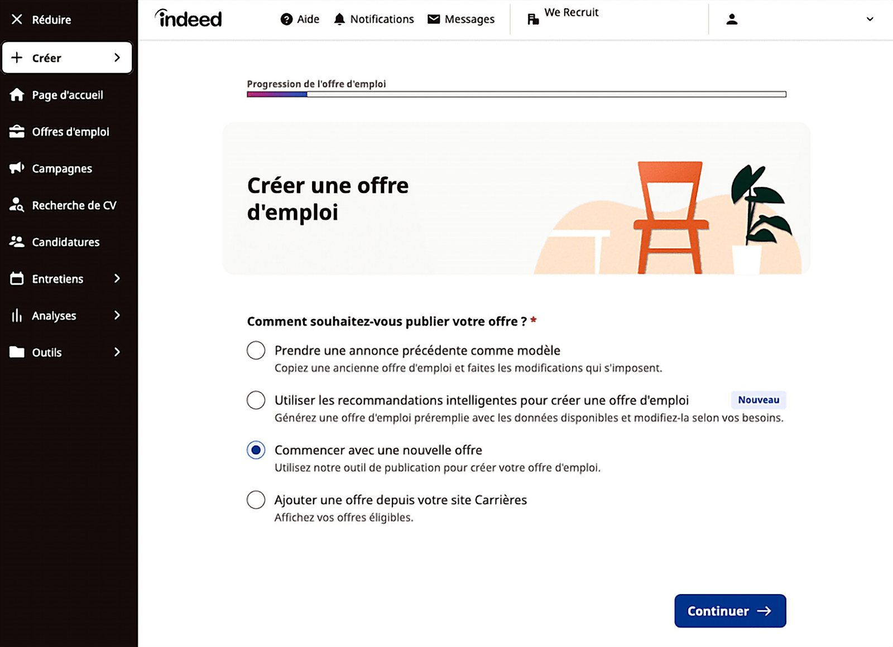
Ce que j’ai proposé à l’agence
- Fluidifier la communication interne entre le commercial et le recrutement par une messagerie instantanée, et harmoniser les fichiers de suivi des candidats.
- Centraliser la base des entreprises contactées et l’assortir de rappels automatisés, pour un suivi commercial sans oubli.
- Créer un modèle graphique harmonisé pour les publications d’offres, afin de renforcer l’image de marque de l’agence.
- Proposer un court questionnaire de satisfaction aux intérimaires en fin de mission, pour nourrir la qualité de service vendue aux clients.
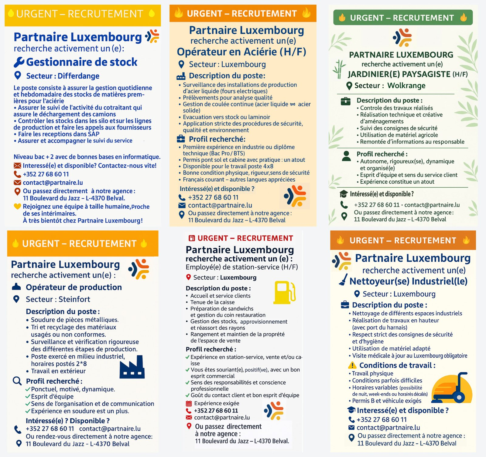
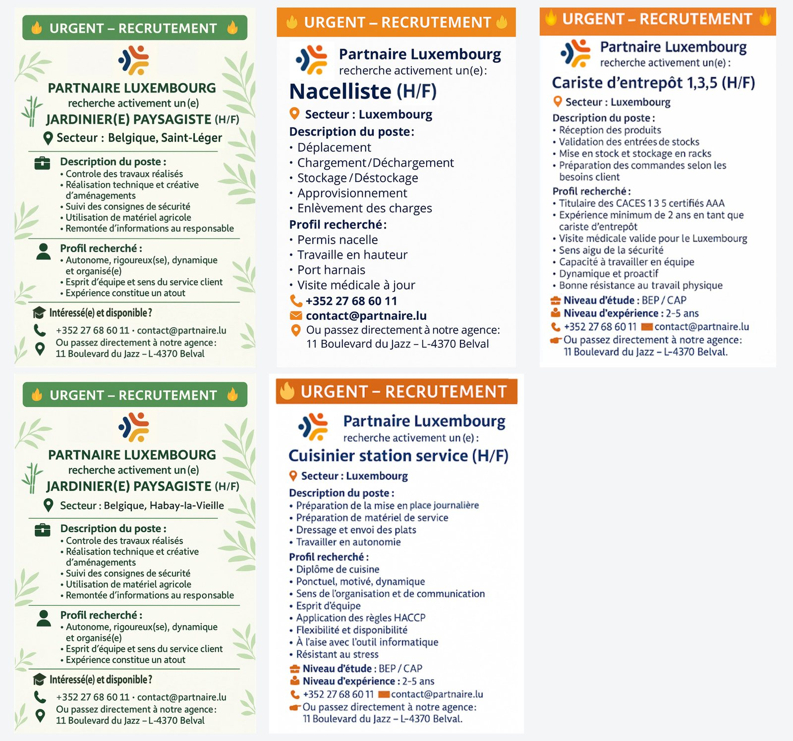
Ce que ce stage m’a appris
- Le métier tient sur trois leviers : la polyvalence d’une équipe à taille humaine capable de passer du commercial au recrutement dans la même journée, la rigueur du suivi permise par des outils partagés, et la proximité, qui transforme une mission ponctuelle en relation durable.
- J’ai gagné en aisance au téléphone, y compris face au refus, et appris à ajuster mon discours en temps réel selon l’interlocuteur.
- J’ai découvert la relation tripartite agence–candidat–entreprise, et compris que la satisfaction de l’intérimaire conditionne celle du client.
- Un échange avec Antoine Dussart, directeur commercial international du groupe, m’a éclairé sur les enjeux européens de l’activité et les spécificités du marché luxembourgeois.
- C’est ce stage qui a confirmé mon orientation : le recrutement, et le Luxembourg.
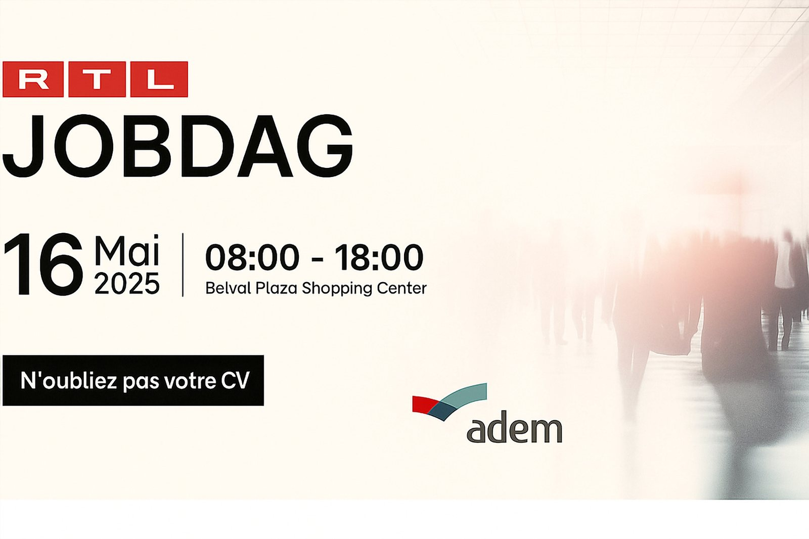
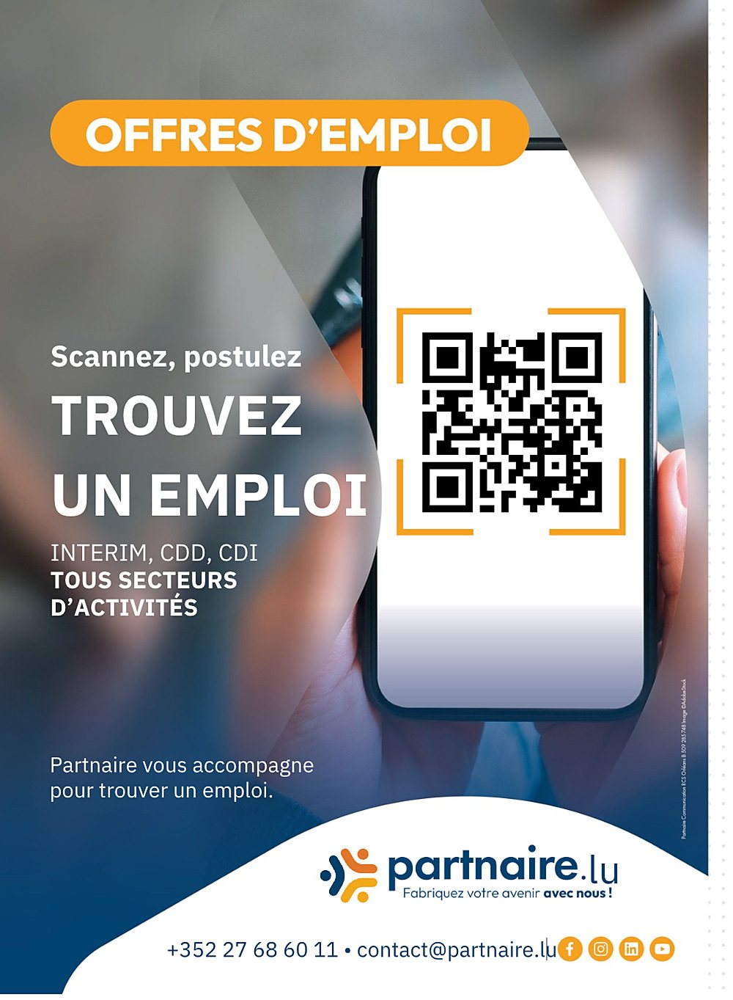
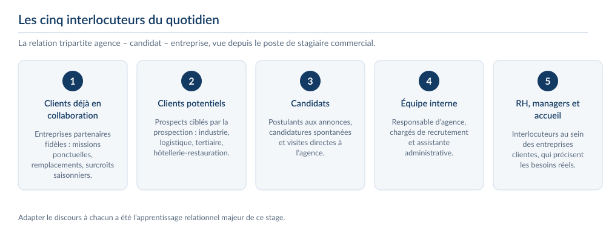
Outils et méthodes mobilisés
TalentplugCRMKompassIndeedMoovijobJobLuxLinkedInGoogle SheetsExcelCanvaIA générative